File: 000510.gt.txt (if the image is defective, simply delete all Arabic text and the line will be excluded)
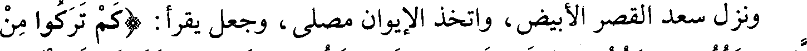
ونزل سعد القصر الأبيض، واتخذ الإيوان مصلى، وجعل يقرأ: (كم تركوا من
File: 000511.gt.txt (if the image is defective, simply delete all Arabic text and the line will be excluded)
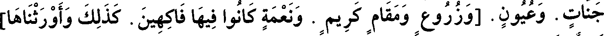
جنات. وعيون. [وزروع ومقام كريم . ونعمة كانوا فيها فاكهين. كذلك وأورثناها]
File: 000512.gt.txt (if the image is defective, simply delete all Arabic text and the line will be excluded)
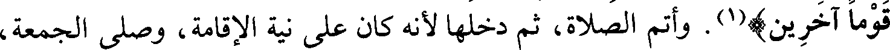
قوما آخرين)(1). وأتم الصلاة، ثم دخلها لأنه كان على نية الإقامة، وصلى الجمعة،
File: 000513.gt.txt (if the image is defective, simply delete all Arabic text and the line will be excluded)
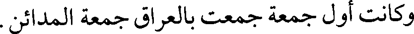
وكانت أول جمعة جمعت بالعراق جمعة المدائن.
File: 000514.gt.txt (if the image is defective, simply delete all Arabic text and the line will be excluded)
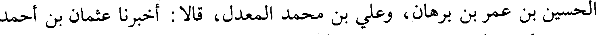
الحسين بن عمر بن برهان، وعلي بن محمد المعدل، قالا : أخبرنا عثمان بن أحمد
File: 000515.gt.txt (if the image is defective, simply delete all Arabic text and the line will be excluded)
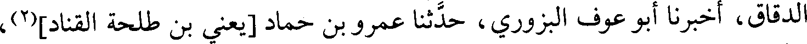
الدقاق، أخبرنا أبو عوف البزوري، حدثنا عمرو بن حماد [يعني بن طلحة القناد](2)،
File: 000516.gt.txt (if the image is defective, simply delete all Arabic text and the line will be excluded)
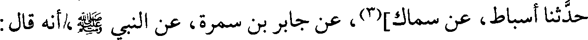
حدثنا أسباط، عن سماك](3)، عن جابر بن سمرة، عن النبي صلعم،/أنه قال :
File: 000517.gt.txt (if the image is defective, simply delete all Arabic text and the line will be excluded)
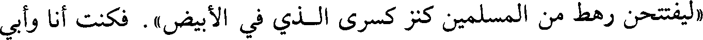
«ليفتتحن رهط من المسلمين كنز كسرى الذي في الأبيض». فكنت أنا وأبي
File: 000518.gt.txt (if the image is defective, simply delete all Arabic text and the line will be excluded)
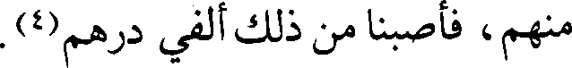
منهم، فأصبنا من ذلك ألفي درهم(4).
File: 000519.gt.txt (if the image is defective, simply delete all Arabic text and the line will be excluded)
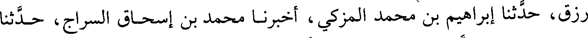
رزق، حدثنا إبراهيم بن محمد المزكي، أخبرنا محمد بن إسحاق السراج، حدثنا
File: 000520.gt.txt (if the image is defective, simply delete all Arabic text and the line will be excluded)
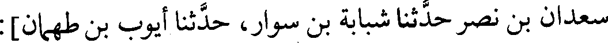
سعدان بن نصر حدثنا شبابة بن سوار، حدثنا أيوب بن طهمان]:
File: 000521.gt.txt (if the image is defective, simply delete all Arabic text and the line will be excluded)
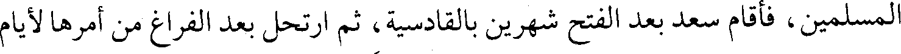
المسلمين، فأقام سعد بعد الفتح شهرين بالقادسية، ثم ارتحل بعد الفراغ من أمرها لأيام
File: 000522.gt.txt (if the image is defective, simply delete all Arabic text and the line will be excluded)
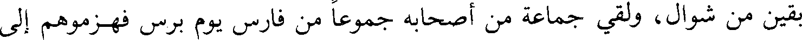
بقين من شوال، ولقي جماعة من أصحابه جموعا من فارس يوم برس فهزموهم إلى
File: 000523.gt.txt (if the image is defective, simply delete all Arabic text and the line will be excluded)
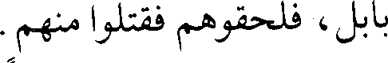
بابل، فلحقوهم فقتلوا منهم.
File: 000524.gt.txt (if the image is defective, simply delete all Arabic text and the line will be excluded)
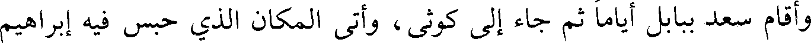
وأقام سعد ببابل أياما ثم جاء إلى كوثى، وأتى المكان الذي حبس فيه إبراهيم
File: 000525.gt.txt (if the image is defective, simply delete all Arabic text and the line will be excluded)
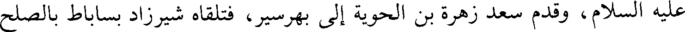
عليه السلام، وقدم سعد زهرة بن الحوية إلى بهرسير، فتلقاه شيرزاد بساباط بالصلح
File: 000526.gt.txt (if the image is defective, simply delete all Arabic text and the line will be excluded)
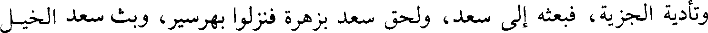
وتأدية الجزية، فبعثه إلى سعد، ولحق سعد بزهرة فنزلوا بهرسير، وبث سعد الخيل
File: 000527.gt.txt (if the image is defective, simply delete all Arabic text and the line will be excluded)
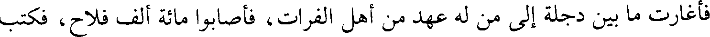
فأغارت ما بين دجلة إلى من له عهد من أهل الفرات، فأصابوا مائة ألف فلاح، فكتب
File: 000528.gt.txt (if the image is defective, simply delete all Arabic text and the line will be excluded)
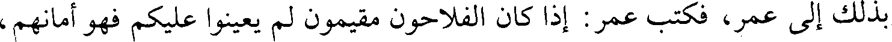
بذلك إلى عمر، فكتب عمر : إذا كان الفلاحون مقيمون لم يعينوا عليكم فهو أمانهم،
File: 000529.gt.txt (if the image is defective, simply delete all Arabic text and the line will be excluded)
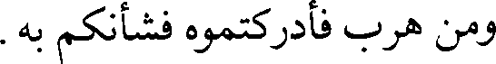
ومن هرب فأدركتموه فشأنكم به.
File: 000530.gt.txt (if the image is defective, simply delete all Arabic text and the line will be excluded)
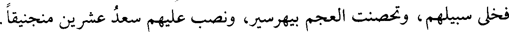
فخلى سبيلهم، وتحصنت العجم بيهرسير، ونصب عليهم سعد عشرين منجنيقا.
File: 000531.gt.txt (if the image is defective, simply delete all Arabic text and the line will be excluded)
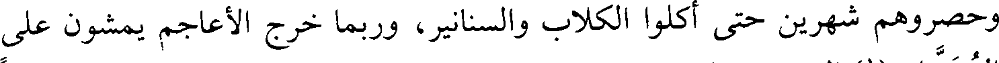
وحصروهم شهرين حتى أكلوا الكلاب والسنانير، وربما خرج الأعاجم يمشون على
File: 000532.gt.txt (if the image is defective, simply delete all Arabic text and the line will be excluded)
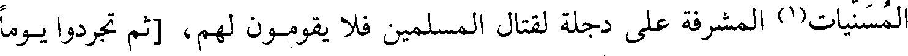
المسنيات(1) المشرفة على دجلة لقتال المسلمين فلا يقومون لهم، [ثم تجردوا يوما
File: 000533.gt.txt (if the image is defective, simply delete all Arabic text and the line will be excluded)
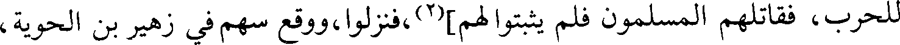
للحرب، فقاتلهم المسلمون فلم يثبتوا لهم](2)،فنزلوا، ووقع سهم في زهير بن الحوية،
File: 000534.gt.txt (if the image is defective, simply delete all Arabic text and the line will be excluded)
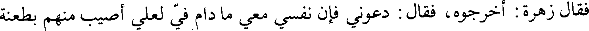
فقال زهرة : أخرجوه، فقال : دعوني فإن نفسي معي ما دام في لعلي أصيب منهم بطعنة
File: 000535.gt.txt (if the image is defective, simply delete all Arabic text and the line will be excluded)
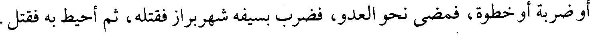
أو ضربة أو خطوة، فمضى نحو العدو، فضرب بسيفه شهربراز فقتله، ثم أحيط به فقتل.
File: 000536.gt.txt (if the image is defective, simply delete all Arabic text and the line will be excluded)
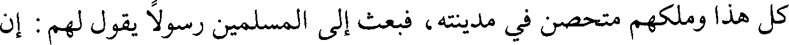
كل هذا وملكهم متحصن في مدينة، فبعث إلى المسلمين رسولا يقول لهم : إن
File: 000537.gt.txt (if the image is defective, simply delete all Arabic text and the line will be excluded)
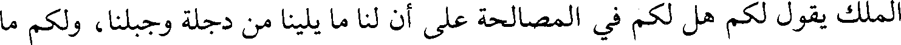
الملك يقول لكم هل لكم في المصالحة على أن لنا ما يلينا من دجلة وجبلنا، ولكم ما
File: 000538.gt.txt (if the image is defective, simply delete all Arabic text and the line will be excluded)
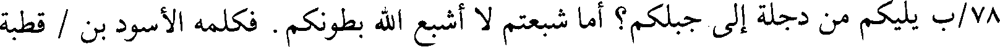
78/ب يليكم من دجلة إلى جبلكم؟ أما شبعتم لا أشبع الله بطونكم. فكلمه الأسود بن / قطبة
File: 000539.gt.txt (if the image is defective, simply delete all Arabic text and the line will be excluded)
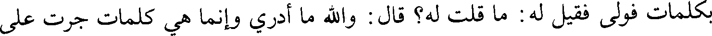
بكلمات فولى فقيل له : ما قلت له؟ قال : والله ما أدري وإنما هي كلمات جرت على
To Save: `Ctrl+s`, make sure to choose `Webpage, complete`!